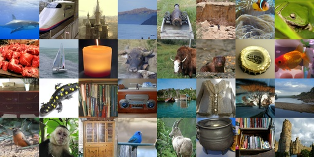
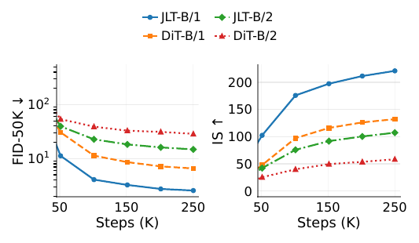

JLT: Clean-Latent Prediction in Latent Diffusion Transformers

TL;DR: We study whether predicting clean data is better than predicting velocity in latent space. Under the same architecture, training settings, and FLUX.2 VAE representation, clean-latent prediction (JLT-B/1) achieves FID 2.50 vs. velocity prediction (DiT-B/1) at FID 6.56 — a 62% improvement.
Results
Matched Target Ablation on ImageNet 256x256
| Model | Target | FID-50K | IS |
|---|---|---|---|
| JLT-B/1 | x (clean) | 2.56 | 220.74 |
| DiT-B/1 | v (velocity) | 6.56 | 132.12 |
| JLT-B/2 | x (clean) | 14.81 | 107.29 |
| DiT-B/2 | v (velocity) | 28.71 | 58.46 |
| JLT-B/1 (final) | x (clean) | 2.50 | 232.51 |
Method
Prediction Targets
Under the linear corruption path z_t = t * x + (1-t) * epsilon:
These are algebraically equivalent via affine readout. But with finite model capacity, the direct output parameterization changes the regression difficulty.
Target-Geometry Analysis
Under local linear-Gaussian approximation x ~ N(0, Sigma):
Key insight: Velocity prediction adds an isotropic unit floor to every direction. When Sigma is anisotropic, low-variance directions become unit-variance in y_v, while clean prediction keeps their target variance small.
Training Curves

Key Findings
- Target geometry matters in latent space: Clean-latent prediction consistently outperforms matched velocity prediction under fixed representation, architecture, and training settings.
- Mechanism: Velocity prediction adds an isotropic covariance floor and amplifies low-variance latent directions, while clean prediction attenuates them.
- Representation independence: The advantage holds at both /1 and /2 VAE-grid scales, not a byproduct of a particular patch size.
Citation
@article{fu2026jlt,
title={{JLT}: {C}lean-{L}atent {P}rediction in {L}atent {D}iffusion {T}ransformers},
author={Fu, Funing and Wang, Tenghui and Zhou, Guanyu and Cen, Junyong and Zhu, Qichao},
journal = {arXiv preprint arXiv:2605.27102},
year={2026}
}